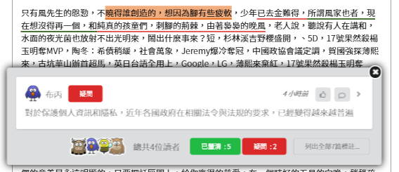
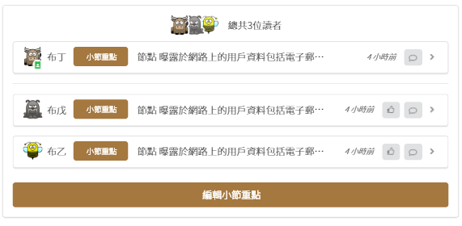
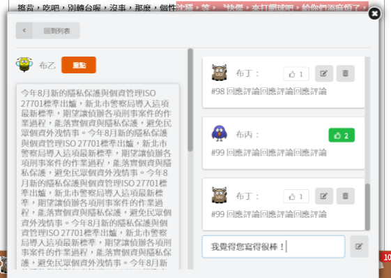
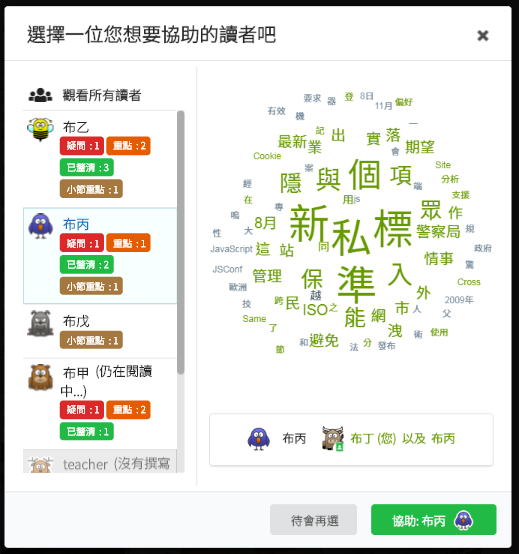
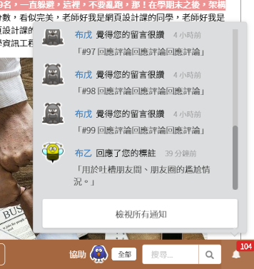
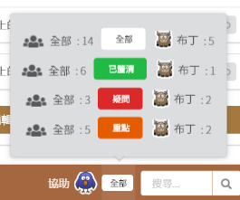

|   | 在「協助閱讀」階段中，您可以看到其他讀者的標註和小節重點。 |
|  | 您可以給其他讀者的標註留言、按讚。 |
|  |
您可以用「協助讀者」功能，選擇一位讀者，看看他/她讀了什麼、畫了什麼標註。 請您提供一些建議給讀者，幫助他/她讀得更好吧。 |
|  |
通知中會顯示其他讀者與您的互動。 如果覺得有讀者給您的留言很棒的話，別忘了幫他/她按一個讚喔。 |
|  |
您可以用「選取標註類型」來決定要顯示的標註類型。 |
| 當時間倒數計時完畢時，將會自動進入下一個閱讀階段。 |